CompVis, Stability AI, LAION의 연구자와 엔지니어들이 개발한 모델로 자연어 설명으로부터 이미지를 생성해내는 Deep Learning AI 입니다.
핵심 아이디어
Latent Diffusion
이 모델은 이미지 생성을 위한 Latent Diffusion이라는 특별한 유형의 확산 모델을 기반으로 한다.
이는 높은 해상도의 이미지 생성을 위해 저차원 잠재 공간에서 확산 과정을 수행하여 연산 및 메모리 복잡성을 줄일 수 있도록 설계되었다.
CLIP Text Encoder
Stable Diffusion은 이미지 생성 과정에서 CLIP (Contrastive Language-Image Pretraining) 모델의 텍스트 인코더를 사용한다.
이를 통해 텍스트 정보를 활용하여 이미지 생성을 조절하고, 이미지와 텍스트 간의 관계를 고려하여 이미지를 생성할 수 있다.
작동 원리
위에서 말했듯이, Stable Diffusion 모델은 텍스트를 input으로 받고, 이미지를 output으로 내는 Deep Learning Model 입니다.
이와 같은 Text to Image가 어떻게 구현될 수 있는지, 간단한 예시를 통해서 설명드리겠습니다.
Text to Image는 VAE 기반, GAN 기반, Diffusion 기반 등 여러가지 방법이 있기 때문에, Diffusion 기반 방식으로 설명하겠습니다.
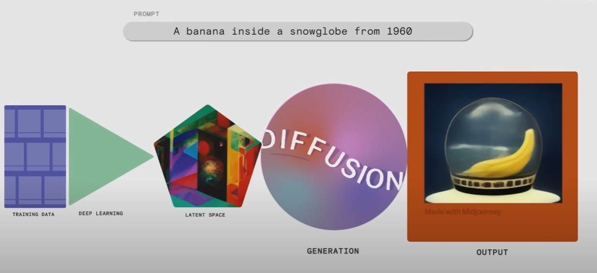
전체 과정은 Training Data - Deep Learning - Latent Space - Generation (Diffusion) - Output으로 나눌 수 있습니다.
우선, Training - Deep Learning 파트를 살펴보겠습니다.
Training & Deep Learning
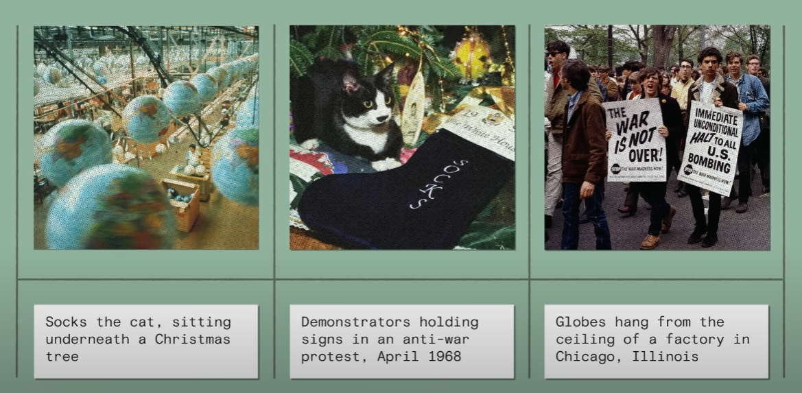 Deep Learning에서 학습할 데이터는 1) 이미지, 2) 이미지에 대한 caption 혹은 description 이렇게 두 가지의 pair로 이루어집니다. 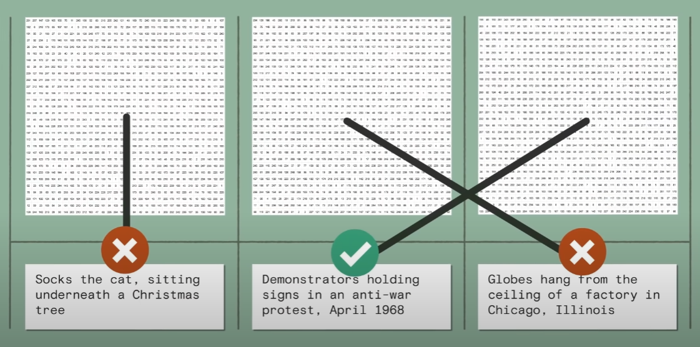 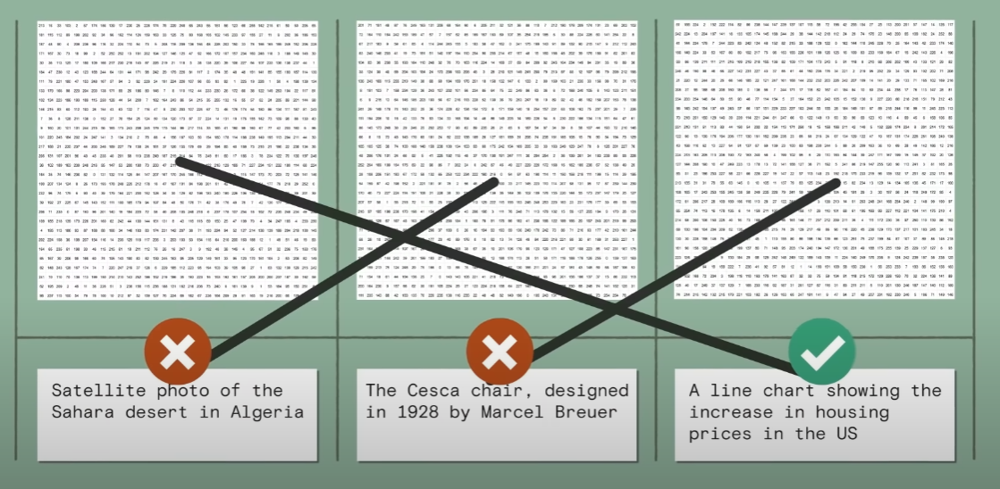 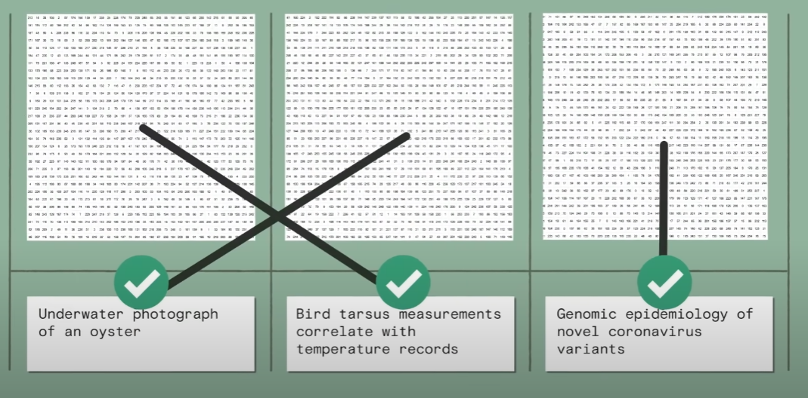 그래야 이렇게 Deep Learning에 discriminator part를 통해서, 숫자로 변환된 이미지를 정답 description에 맞춰 학습할 수 있게 됩니다.
Latent Space
이제 Latent Space를 구성해야 합니다. Latent Space란, 잠재 공간 혹은 임베딩 공간으로 불리는 것으로,
쉽게 말해서 데이터를 n가지 특성에 따라 분류 해놓은 n-dimensional space입니다.
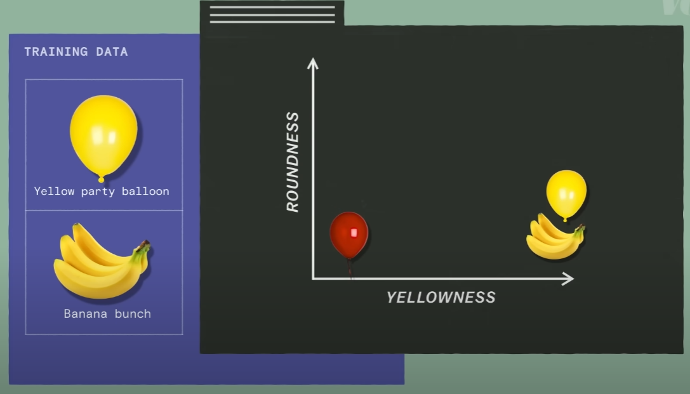
위 사진은 x축은 yellowness를, y축은 roundness를 놓고 red balloon, yellow party balloon, banana bunch를 Latent Space에 각각 배치한 것입니다.
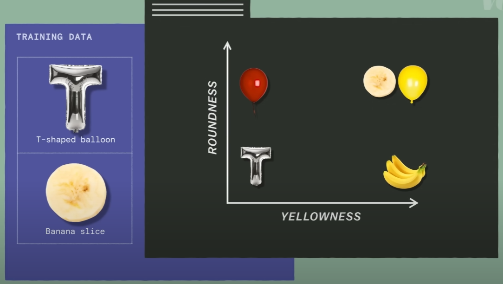
이번에는 T-shaped balloon, banana slice 두 개의 데이터를 Latent Space에 추가하였습니다.
하지만, x y 두 개 뿐이어서 다른 데이터 포인트들과 잘 구별되지 않는 모습입니다.
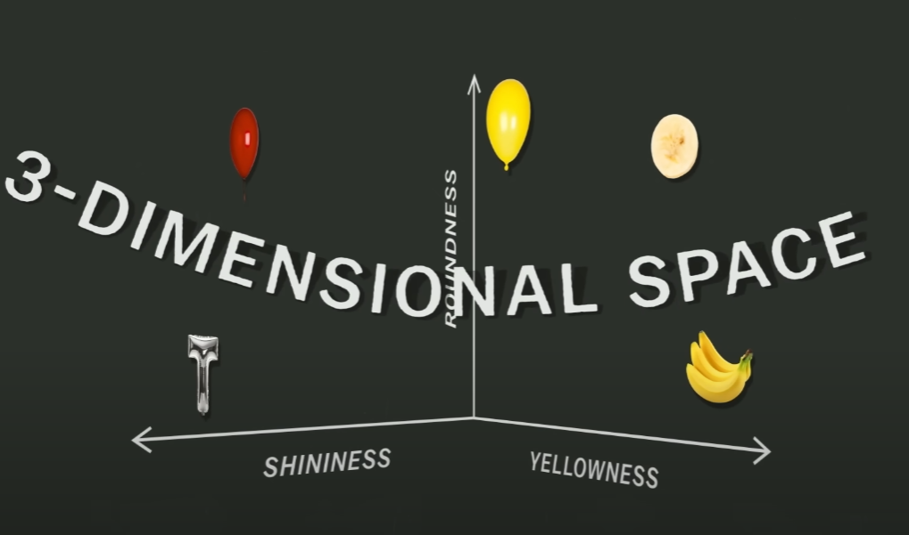
이때 그림처럼 shininess라는 feature를 추가해준다면, 단 세 개의 feature를 통해 모든 데이터를 Latent Space에 잘 구별시켜 배치할 수가 있습니다.
하지만, 실제 모델들은 그 어떤 text를 넣어도 이미지를 잘 생성해내야 합니다.
예를 들어서, 하마를 입력했을 때 비슷하게 생긴 곰이 나오지 않도록 Latent Space를 구성해야 한다는 이야기이고, 이는 feature의 개수가 늘어난다는 것과 같습니다.
따라서 Stable Diffusion의 Latent Space는 인간이 인지할 수 있는 3d space를 넘어서, 수천 수만의 dimension을 가진 space가 되는 것입니다.
Generation & Output
이제, generation part에서 diffusion model이 어떻게 작동하는지 알아보겠습니다.
핵심 개념은 'diffusion' 이라는 키워드에 있습니다.
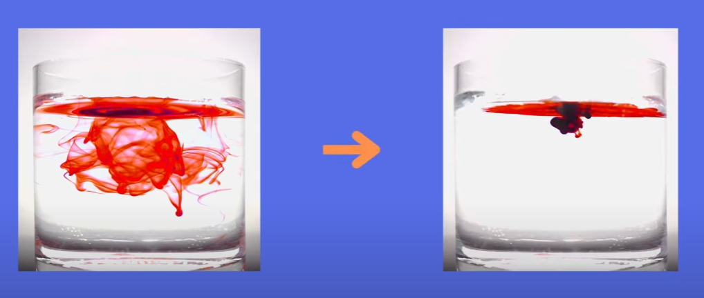
만약 잉크가 물에 diffusse 된다면, 최초로 diffusion이 시작된 점에서 퍼져나가다가 평형 상태에 도달하게 됩니다.
하지만, 그 도달 시점에서 다시 시작 시점으로 되돌릴 수는 없습니다.
diffusion model은 이러한 현상에서 착안되었고 시작 지점으로 되돌아가는 계산법을 학습하는 것을 목표로 하고 있습니다.
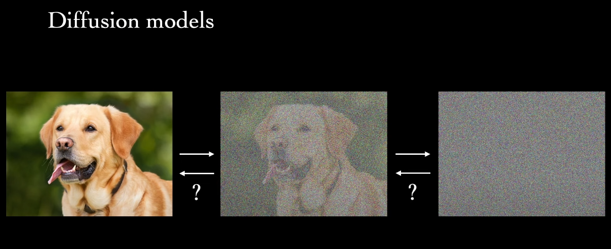
컴퓨터는 강아지 이미지를 결국 숫자 배열로 인식합니다.
그리고, 이 숫자 배열은 특정 행렬의 연산 (markov chain)을 통해서 noise image로 바뀔 수 있습니다.
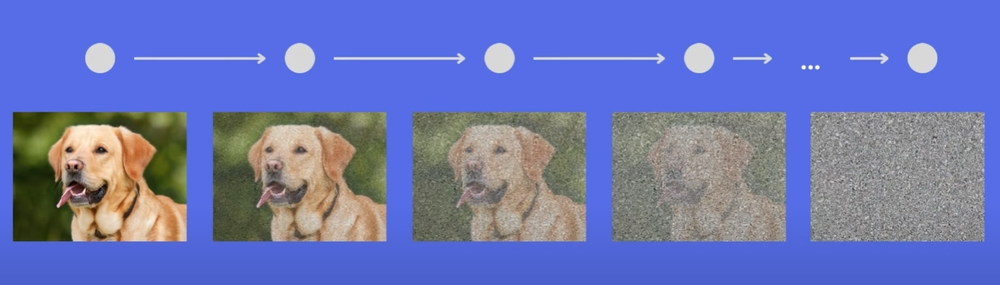
시작 이미지에서 계속 곱해진 markov 연산을 안다면, 반대로 noise image에서 역변환을 이용해 시작 이미지로 되돌릴 수도 있습니다.
diffusion model은 이러한 선형대수적 성질을 이용하여, 나중에 어떠한 이미지를 생성할 때 이전에 학습했던 noise image -> original image 연산을 이용해서
무에서 유를 창조하게 되는 것입니다.
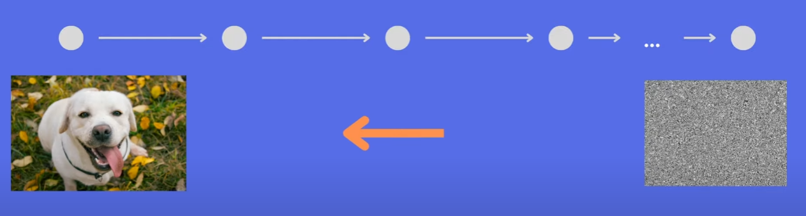
학습 과정과는 달리 실제로 이용할때는 noise image에서 시작하게 됩니다.
물론 어떤 연산을 하게 될지는 input으로 들어온 text가 어떤 Latent Space에 속하는지에 따라서 달라지기 때문에 같은 noise image에서
시작을 해도 완전히 다른 이미지가 나오게 되는 것입니다.
Diffusion model beats GAN
GAN이란 Generative Adversarial Network의 약자로, 한글로는 생성적 적대 네트워크입니다.
Generator(생성자)와 Discriminator(판별자)로 이루어졌고, 쉽게 말해서 도둑이 위조 지폐를 만드려고 하면,
경찰은 이를 찾아내려 하기 때문에 도둑은 계속해서 더 잘 위조하게 되면서
생성된 모조품의 성능이 올라간다는 이론에서 착안된 기술입니다.
deep learning은 아주 크게 나누면 computer vision과 NLP분야로 나눌 수 있는데, computer vision에서 영상 처리 관련하면
거의 99% 활용되면 기술이 GAN입니다. 여러분이 잘 아시는 딥페이크도 GAN이 활용된 기술입니다.
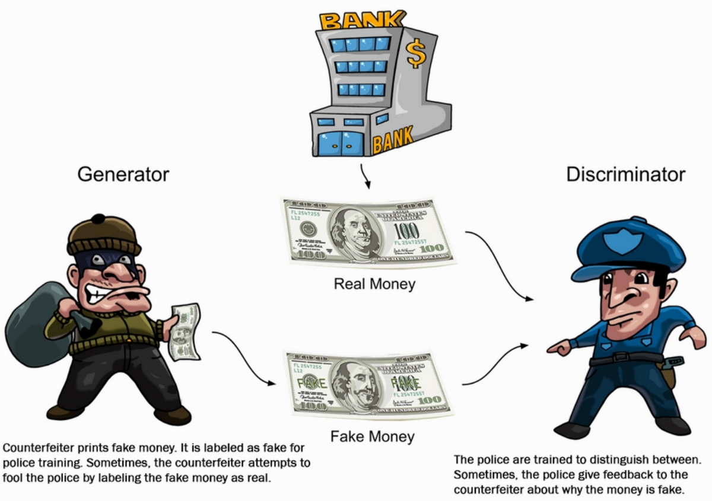
하지만 2021년에 발표된 Diffusion Models Beat GANs on Image Synthesis라는 논문에서는
Diffusion Model이 GAN을 이겼다고 공언하고 있습니다. 조금 섣부른 말일 수도 있으나, 그만큼
이전 세대에 이미지 생성을 지배했던 GAN을 누를 만큼 압도적인 기법이 등장했다는 표현이 될 것 같네요.
What's different from others?
이전 문단에서 여러번 설명 드렸지만, 기존의 기술들은 대부분 GAN기반인 반편 Stable Diffusion은 diffusion 기법을 쓴다는 것이 가장 큰 차이점입니다.
 위에서 간단히 설명드린 GAN 외에도, VAE(Variational Auto Encoder)라고 하는 굉장히 유명한 network를 기반한 이미지 생성 방식도 존재합니다.
위에서 간단히 설명드린 GAN 외에도, VAE(Variational Auto Encoder)라고 하는 굉장히 유명한 network를 기반한 이미지 생성 방식도 존재합니다.
또한, Flow-based는 저도 이 사진을 찾으면서 처음 알게된 모델이지만, 도식상 분포 자체의 역행렬을 이용해서 noise로부터 이미지를
생성해내는 방법인 것 같습니다.
자세히 보셔야 할 것은 빨간 박스모양의 'z' 입니다. GAN에서의 Z-vector는 랜덤 벡터를 뜻하는 것으로, 위에서 설명했던 noise 이미지에 해당하는 벡터입니다.
다른 기법들과 달리 diffusion 기법만 Z-vector가 중앙에 위치하지 않고 x0 이미지와 정 반대편에 있습니다.
Diffusion은 최초의 이미지에서 Gaussian noise를 계속 더하면 결국 noise 이미지에 도달하고, 이 연산을 반대로 하면 원래 이미지로 돌아간다는 원리를 이용했음이 포인트입니다.
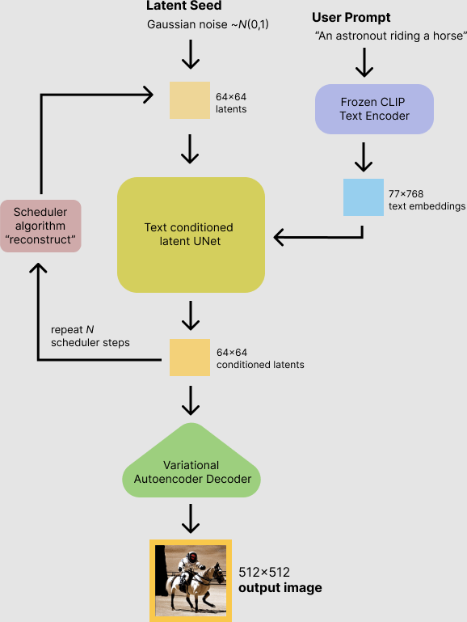
지금까지 diffusion model에 대해서 설명하였지만, 사실 Stable Diffusion은 그 중에서도 latent diffusion model입니다.
Diffusion의 원리에 대해 이해하셨다면, 이 또한 어렵지 않습니다.
위에서 latent space를 설명하면서, 많은 데이터들을 특징별로 구분짓는 공간이라고 했습니다.
Latent는 어떤 데이터의 속성 정도를 의미한다고 보시면 됩니다. 따라서, latent diffusion model은 원본 이미지에 대해서 diffuse하는 것이 아니라,
원본 이미지의 latent vector에 대해서 diffuse를 하게 되는 것입니다.
연산의 대상이 이미지의 원본이 아닌, 원본 이미지의 latent vector라는 점을 제외하면 방식 자체에는 큰 차이가 없습니다.
Diffusion Model 알고리즘
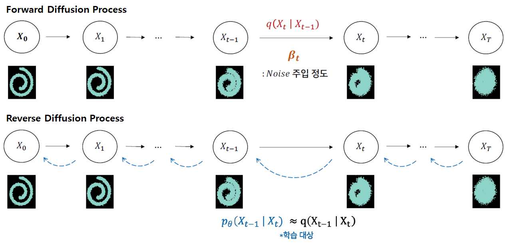
현재 상태(t)는 이전상태(t-1)에 의존한다는 마르코프(Markov) 특성을 가집니다. (현재 상태는 xt이지만 가독성을 위해 t로 표기하겠습니다.)
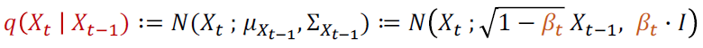
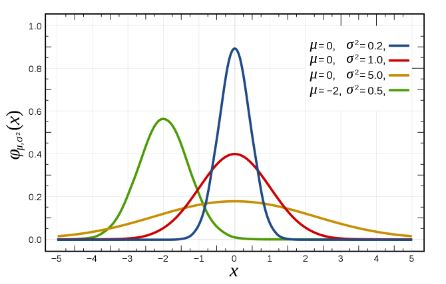
이전 상태(t-1)가 주어질 때 현재 상태(t)가 될 확률분포q는 평균(μ)과 분산(Σ)으로 구성된 Gaussian Distribution(=N= Normal Distribution)을 따릅니다.
이 식을 Noise 크기 parameter인 β를 포함하여 다르게 표현하면, 이전 상태(t-1)의 이미지가 β만큼 다른 pixel을 선택하게 하고,
root(1-β)만큼 이전 pixel값을 선택하게 하는 식으로 정의 할 수 있습니다. t가 점점 증가함에 따라 β가 커짐으로써 Noise가 강해집니다.
Forward과정에서 β는 고정되어 있지만, 확률 분포를 따르기 때문에 마지막 상태(T)의 결과가 항상 다를 수 있습니다.
다음으로 Reverse과정에서 마지막 상태(T)를 반대로 최초 상태(0)로 만들고자 합니다. (위에서 빨간색으로 표시한) q식의 좌측항(posterior)과 우측항(prior)을 바꾼 조건부 확률 q(xt-1 | xt)을 알 수 있다면,
최초 상태(0)로 만들 수 있겠지만 이를 계산 할 수가 없습니다 (각 t시점에서 이미지의 확률 분포q(xt)를 알 수 없기 때문에 베이즈 정리에 의해 계산되지 않습니다).
때문에 확률분포 q가 주어졌을 때, 이 확률 분포를 가장 잘 모델링하는 확률 분포 pθ를 찾는 문제로 변환 합니다.
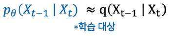
즉 확률분포 q에서 관측한 값으로 확률 분포 pθ의 likelihood를 구하였을 때, 그 likelihood값이 최대(Maximum)가 되는 확률분포를 찾는 Maximum Likelihood Estimation 문제입니다.
-log를 붙이면 Negative Likelihood가 되고, 이를 최대화가 아닌 최소화하는 식으로 Loss를 설계 할 수 있습니다.
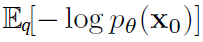
E는 확률 분포 q로 샘플링한 관측값에 대한 평균값(Expectation=기대값=적분값)을 의미합니다. 위 식을 전개 할 경우 아래 수식이 되며,
최초 Diffusion 논문(2015)에서는 Pθ가 가우시안 분포를 따른다고 가정하고 아래 수식이 0이 되도록 확률분포 parameter(θ)를 업데이트 합니다.
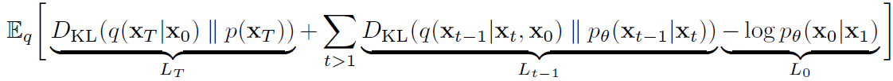
위 식을 다시 한번 더 정제한 DDPM(2020)에서는 아래 수식을 통해 Loss를 설계하여 UNet을 업데이트 하게 됩니다.
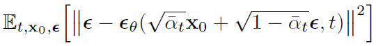